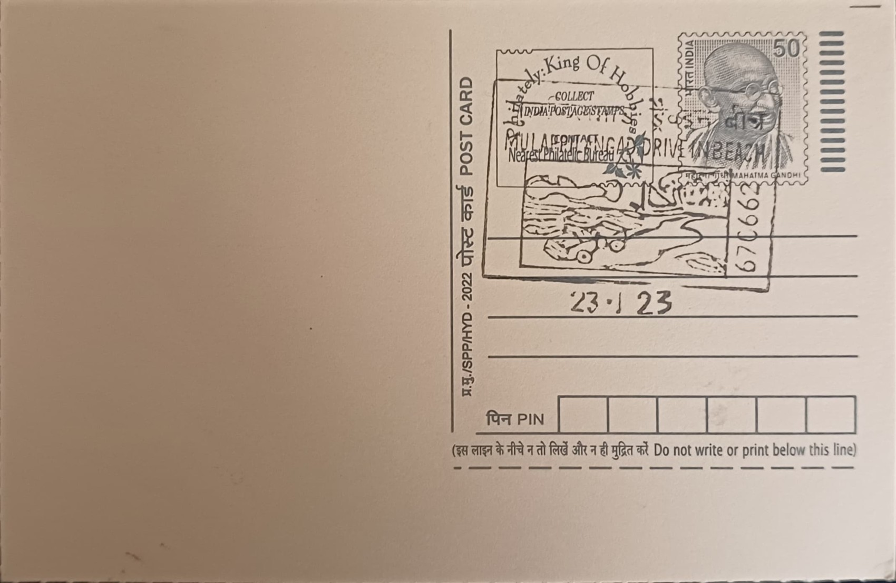

Muzhappilangad Beach
മുഴപ്പിലങ്ങാട് ബീച്ച്


Muzhappilangad takes its name from the village and local panchayat on Kerala's Malabar coast in which it lies, a short distance south of Thalassery in Kannur district. Unlike most Indian beaches, which are rocky, narrow, or too soft underfoot for vehicles, Muzhappilangad's sand compacts firmly enough to bear the weight of cars and motorbikes, a geological accident of grain composition and tidal flattening that has, over recent decades, turned a quiet fishing-adjacent shoreline into the only drive-in beach in India and, by several tourism accounts, the longest such beach in Asia. The name itself carries no grand founding legend; its significance is a modern discovery of natural suitability rather than an ancient designation.
The beach's core identity rests on this rare combination of a long, flat, hard-packed strand and a naturally sheltered sea. Stretching variously reported between about four and five kilometres, it is hemmed along parts of its length by black rock outcrops scattered just offshore and along the shore itself, which blunt the force of incoming currents and keep the inshore waters notably calm and shallow compared with the open Arabian Sea elsewhere on the Malabar coast. This combination of safety and novelty earned it inclusion among BBC Autos' list of the world's best beaches for driving in 2016, cementing its reputation beyond Kerala and drawing both domestic road-trippers and international visitors to a stretch of coast that had previously been known mainly within the district.
Development of the site as an organised tourist destination has been driven largely by the Kerala Tourism department and the local panchayat rather than any single founder or builder, with vehicle access regulated through entry points and, at times, restrictions following accidents and environmental concerns over fuel spillage and disturbance to the shore. The rocky barriers that protect the swimming areas also provide habitat used by migratory birds during the winter season, giving the beach a secondary identity as a birdwatching spot alongside its automotive fame. Water-based activity has grown alongside this, with kayaking, stand-up paddleboarding, and other boating and parasailing operations run by private operators and the Kerala Tourism Development Corporation (KTDC), which also maintains a resort property near the site.
A notable recent addition is a roughly 100-metre floating bridge installed at the southern edge of the beach in 2023, built to let visitors walk out over the shallow backwaters and rocky shoals rather than merely drive or swim, and it quickly became one of the more photographed features of the site. The beach has also been the subject of periodic controversy, as authorities have had to weigh the popularity of vehicular beach access against road-safety incidents involving speeding cars and bikes on the sand, as well as ecological concerns about oil leaks and litter affecting the rock pools and the adjoining fishing grounds used by the local community.
The site today falls under the joint oversight of the Muzhappilangad grama panchayat, the Kannur district administration, and the state tourism department, which have at various points proposed facelift and beautification projects, including a reported plan worth around fifty crore rupees aimed at improving parking, lighting, and visitor facilities along the stretch. KTDC's resort and the array of independent water-sports operators now give the beach a dual character as both a drive-and-picnic destination and a base for organised adventure tourism. Managed through this mix of government planning and private enterprise, Muzhappilangad functions today as one of North Kerala's principal coastal attractions, drawing a steady flow of weekend visitors from Kannur and Thalassery alongside longer-distance tourists following the Malabar coast circuit.
| Date of Introduction | August 3, 2006 |
|---|---|
| Address | Sub Postmaster, |
| Muzhappilangad SO, | |
| Kannur (dt.), Kerala - 670662. |